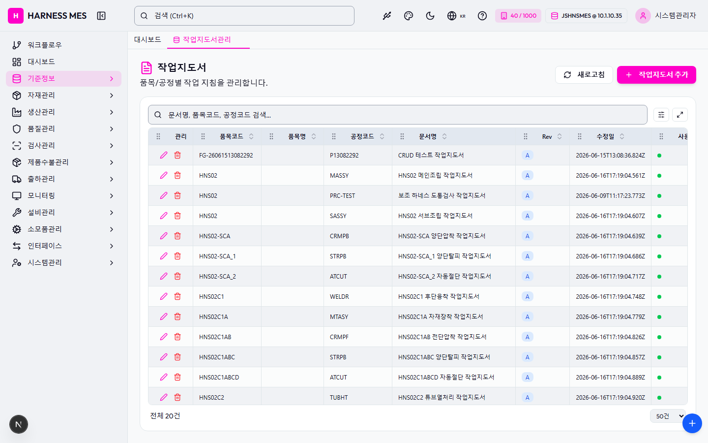

Route: /master/work-instruction
Status: PASS / HTTP 200
| 기능/버튼 | 처리 방식 | 상태 | 비고 |
|---|---|---|---|
| 화면 로드 | GET /master/work-instruction | 실행 | HTTP 200 |
| 라우트 prewarm | 직접 HTTP 확인 | 실행 | HTTP 200, 255476ms |
| 초기 API 호출 | 브라우저 네트워크 수집 | 실행 | 9건 |
| 🇰🇷 | 화면 버튼 목록화 | 목록화 | 후속 메뉴별 세부 시나리오 실행 대상 |
| 시스템관리자 | 화면 버튼 목록화 | 목록화 | 후속 메뉴별 세부 시나리오 실행 대상 |
| 워크플로우 | 화면 버튼 목록화 | 목록화 | 후속 메뉴별 세부 시나리오 실행 대상 |
| 대시보드 | 화면 버튼 목록화 | 목록화 | 후속 메뉴별 세부 시나리오 실행 대상 |
| 기준정보 | 화면 버튼 목록화 | 목록화 | 후속 메뉴별 세부 시나리오 실행 대상 |
| 자재관리 | 화면 버튼 목록화 | 목록화 | 후속 메뉴별 세부 시나리오 실행 대상 |
| 생산관리 | 화면 버튼 목록화 | 목록화 | 후속 메뉴별 세부 시나리오 실행 대상 |
| 품질관리 | 화면 버튼 목록화 | 목록화 | 후속 메뉴별 세부 시나리오 실행 대상 |
| 검사관리 | 화면 버튼 목록화 | 목록화 | 후속 메뉴별 세부 시나리오 실행 대상 |
| 제품수불관리 | 화면 버튼 목록화 | 목록화 | 후속 메뉴별 세부 시나리오 실행 대상 |
| 출하관리 | 화면 버튼 목록화 | 목록화 | 후속 메뉴별 세부 시나리오 실행 대상 |
| 모니터링 | 화면 버튼 목록화 | 목록화 | 후속 메뉴별 세부 시나리오 실행 대상 |
| 설비관리 | 화면 버튼 목록화 | 목록화 | 후속 메뉴별 세부 시나리오 실행 대상 |
| 소모품관리 | 화면 버튼 목록화 | 목록화 | 후속 메뉴별 세부 시나리오 실행 대상 |
| 인터페이스 | 화면 버튼 목록화 | 목록화 | 후속 메뉴별 세부 시나리오 실행 대상 |
| 시스템관리 | 화면 버튼 목록화 | 목록화 | 후속 메뉴별 세부 시나리오 실행 대상 |
| 작업지도서관리 | 화면 버튼 목록화 | 목록화 | 후속 메뉴별 세부 시나리오 실행 대상 |
| 새로고침 | 화면 버튼 목록화 | 목록화 | 후속 메뉴별 세부 시나리오 실행 대상 |
| 작업지도서 추가 | 화면 버튼 목록화 | 목록화 | 후속 메뉴별 세부 시나리오 실행 대상 |
| 전체화면 보기 | 화면 버튼 목록화 | 목록화 | 후속 메뉴별 세부 시나리오 실행 대상 |
| AI 채팅 | 화면 버튼 목록화 | 목록화 | 후속 메뉴별 세부 시나리오 실행 대상 |
| 개선요청 등록 | 화면 버튼 목록화 | 목록화 | 후속 메뉴별 세부 시나리오 실행 대상 |
| 입력 필드 | DOM 수집 | 목록화 | 2개 |
| 선택 필드 | DOM 수집 | 목록화 | 1개 |
| 목록/그리드 | DOM 수집 | 목록화 | table 1, grid 0 |
| Method | URL | Status | OK |
|---|---|---|---|
| GET | /api/health | 200 | OK |
| GET | /api/db-info | 200 | OK |
| GET | /api/auth/me | 200 | OK |
| GET | /api/ai/page-tools/master.work-instruction | 200 | OK |
| GET | /api/master/com-codes/all-active | 200 | OK |
| GET | /api/system/configs/active | 200 | OK |
| GET | /api/system/comm-configs?commType=SERIAL&useYn=Y | 200 | OK |
| GET | /api/menu-categories/tree | 200 | OK |
| GET | /api/master/work-instructions?limit=5000 | 200 | OK |
requestfailed: GET /api/db-info net::ERR_ABORTED requestfailed: GET /api/health net::ERR_ABORTED requestfailed: GET https://fonts.gstatic.com/s/outfit/v15/QGYvz_MVcBeNP4NJtEtq.woff2 net::ERR_ABORTED

H HARNESS MES 🇰🇷 40 / 1000 JSHNSMES @ 10.1.10.35 시스템관리자 워크플로우 대시보드 기준정보 자재관리 생산관리 품질관리 검사관리 제품수불관리 출하관리 모니터링 설비관리 소모품관리 인터페이스 시스템관리 대시보드 작업지도서관리 작업지도서 품목/공정별 작업 지침을 관리합니다. 새로고침 작업지도서 추가 관리 품목코드 품목명 공정코드 문서명 Rev 수정일 사용 FG-26061513082292 P13082292 CRUD 테스트 작업지도서 A 2026-06-15T13:08:36.824Z HNS02 MASSY HNS02 메인조립 작업지도서 A 2026-06-16T17:19:04.561Z HNS02 PRC-TEST 보조 하네스 도통검사 작업지도서 A 2026-06-09T11:17:23.773Z HNS02 SASSY HNS02 서브조립 작업지도서 A 2026-06-16T17:19:04.607Z HNS02-SCA CRMPB HNS02-SCA 양단압착 작업지도서 A 2026-06-16T17:19:04.639Z HNS02-SCA_1 STRPB HNS02-SCA_1 양단탈피 작업지도서 A 2026-06-16T17:19:04.686Z HNS02-SCA_2 ATCUT HNS02-SCA_2 자동절단 작업지도서 A 2026-06-16T17:19:04.717Z HNS02C1 WELDR HNS02C1 후단융착 작업지도서 A 2026-06-16T17:19:04.748Z HNS02C1A MTASY HNS02C1A 자재장착 작업지도서 A 2026-06-16T17:19:04.779Z HNS02C1AB CRMPF HNS02C1AB 전단압착 작업지도서 A 2026-06-16T17:19:04.826Z HNS02C1ABC STRPB HNS02C1ABC 양단탈피 작업지도서 A 2026-06-16T17:19:04.857Z HNS02C1ABCD ATCUT HNS02C1ABCD 자동절단 작업지도서 A 2026-06-16T17:19:04.889Z HNS02C2 TUBHT HNS02C2 튜브열처리 작업지도서 A 2026-06-16T17:19:04.920Z HNS02C2A CRMPR HNS02C2A 후단압착 작업지도서 A 2026-06-16T17:19:04.951Z HNS02C2AB HEXCP HNS02C2AB 육각압착 작업지도서 A 2026-06-16T17:19:04.982Z HNS02C2ABC MTASY HNS02C2ABC 자재장